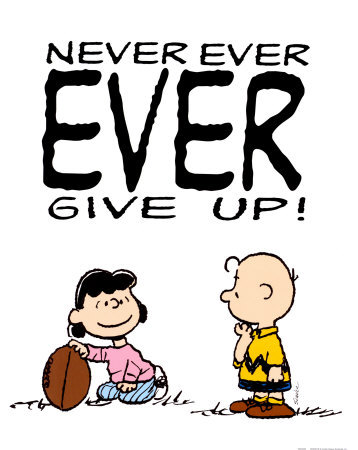

Hvert år står bevisene sterkere; regelmessig trening er blant de beste måtene å bedre livskvaliteten din. Du kan redusere sykdomsrisikoer og skader drastisk ved å trene minst 30 minutter per dag de fleste dager i uken. Trening hjelper også vår emosjonelle helse.
Ivillage.com melder om at bare 24 prosent av amerikanerne trener minst tre ganger i uken. Mangel på fysisk aktivitet kombinert med en dårlig diett utgjør hele 14 prosent av dødsårsakene i USA hvert år. Dette er den støste livstilssykdommen ved siden av røyking. Om man ikke trener regelmessig hver uke risikerer man å utvikle hjerte- og kar sykdommer, diabetes type 2 og kreft. Selv profesjonelle atleter klarer ikke holde på formen dersom de slutter helt å trene. Derfor er det viktig å fortsette treningen på et gjevnt nivå. Trenger du motivasjon for treningen? Her er fem gode tips som kan gi deg et startspark!
Men klarer du å holde ut i de første vanskelige seks ukene, har du satt retningslinjene for et flott liv fremover!
